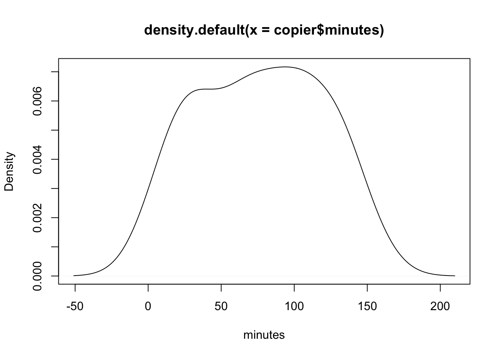
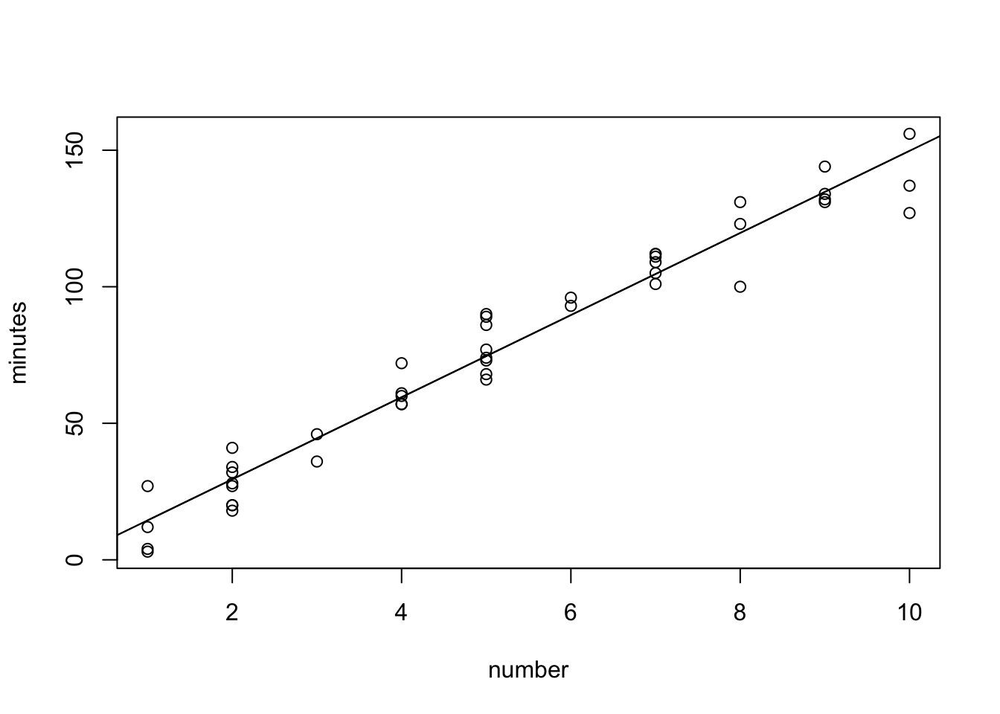

Last updated: 2019-09-20
Checks: 7 0
Knit directory: Lab3/
This reproducible R Markdown analysis was created with workflowr (version 1.4.0). The Checks tab describes the reproducibility checks that were applied when the results were created. The Past versions tab lists the development history.
Great! Since the R Markdown file has been committed to the Git repository, you know the exact version of the code that produced these results.
Great job! The global environment was empty. Objects defined in the global environment can affect the analysis in your R Markdown file in unknown ways. For reproduciblity it’s best to always run the code in an empty environment.
The command set.seed(20190920) was run prior to running the code in the R Markdown file. Setting a seed ensures that any results that rely on randomness, e.g. subsampling or permutations, are reproducible.
Great job! Recording the operating system, R version, and package versions is critical for reproducibility.
Nice! There were no cached chunks for this analysis, so you can be confident that you successfully produced the results during this run.
Great job! Using relative paths to the files within your workflowr project makes it easier to run your code on other machines.
Great! You are using Git for version control. Tracking code development and connecting the code version to the results is critical for reproducibility. The version displayed above was the version of the Git repository at the time these results were generated.
Note that you need to be careful to ensure that all relevant files for the analysis have been committed to Git prior to generating the results (you can use wflow_publish or wflow_git_commit). workflowr only checks the R Markdown file, but you know if there are other scripts or data files that it depends on. Below is the status of the Git repository when the results were generated:
Ignored files:
Ignored: .Rhistory
Ignored: .Rproj.user/
Note that any generated files, e.g. HTML, png, CSS, etc., are not included in this status report because it is ok for generated content to have uncommitted changes.
These are the previous versions of the R Markdown and HTML files. If you’ve configured a remote Git repository (see ?wflow_git_remote), click on the hyperlinks in the table below to view them.
| File | Version | Author | Date | Message |
|---|---|---|---|---|
| Rmd | cda86b5 | shiy14 | 2019-09-20 | 6 |
| html | cda86b5 | shiy14 | 2019-09-20 | 6 |
| Rmd | 28b22b1 | shiy14 | 2019-09-20 | 5 |
| html | 28b22b1 | shiy14 | 2019-09-20 | 5 |
| Rmd | b889f2f | shiy14 | 2019-09-20 | 4 |
| html | b889f2f | shiy14 | 2019-09-20 | 4 |
| html | 4170e2f | shiy14 | 2019-09-20 | 3 |
| Rmd | 7e88d86 | shiy14 | 2019-09-20 | 3 |
| html | 7e88d86 | shiy14 | 2019-09-20 | 3 |
| Rmd | 43d43dc | shiy14 | 2019-09-20 | 2 |
| html | 43d43dc | shiy14 | 2019-09-20 | 2 |
| Rmd | 0483a64 | shiy14 | 2019-09-20 | 1 |
icecream <- read.table("/Users/yangfengshi/Desktop/STA\ 463/Lab2/icecream.txt")
head(icecream) id female ice_cream video puzzle
1 70 0 2 47 57
2 121 1 1 63 61
3 86 0 3 58 31
4 141 0 3 53 56
5 172 0 1 53 61
6 113 0 1 63 61copier <- read.table("/Users/yangfengshi/Desktop/STA\ 463/Lab2/CH01PR20.txt")
head(copier) V1 V2
1 20 2
2 60 4
3 46 3
4 41 2
5 12 1
6 137 10colnames(copier)=c("minutes","number")
puzzle.summary <- icecream %>% group_by(ice_cream) %>% summarise(Mean=mean(puzzle),
Variance=var(puzzle))%>%as.data.frame()plot(density(copier$minutes),xlab="minutes")#,ylab="density")
| Version | Author | Date |
|---|---|---|
| 7e88d86 | shiy14 | 2019-09-20 |
copier.fit <- lm(minutes~number,data=copier)
copier.fit
Call:
lm(formula = minutes ~ number, data = copier)
Coefficients:
(Intercept) number
-0.5802 15.0352 class(copier.fit)[1] "lm"str(copier.fit)List of 12
$ coefficients : Named num [1:2] -0.58 15.04
..- attr(*, "names")= chr [1:2] "(Intercept)" "number"
$ residuals : Named num [1:45] -9.49 0.439 1.474 11.51 -2.455 ...
..- attr(*, "names")= chr [1:45] "1" "2" "3" "4" ...
$ effects : Named num [1:45] -511.61 277.42 2.56 12.5 -1.55 ...
..- attr(*, "names")= chr [1:45] "(Intercept)" "number" "" "" ...
$ rank : int 2
$ fitted.values: Named num [1:45] 29.5 59.6 44.5 29.5 14.5 ...
..- attr(*, "names")= chr [1:45] "1" "2" "3" "4" ...
$ assign : int [1:2] 0 1
$ qr :List of 5
..$ qr : num [1:45, 1:2] -6.708 0.149 0.149 0.149 0.149 ...
.. ..- attr(*, "dimnames")=List of 2
.. .. ..$ : chr [1:45] "1" "2" "3" "4" ...
.. .. ..$ : chr [1:2] "(Intercept)" "number"
.. ..- attr(*, "assign")= int [1:2] 0 1
..$ qraux: num [1:2] 1.15 1.04
..$ pivot: int [1:2] 1 2
..$ tol : num 1e-07
..$ rank : int 2
..- attr(*, "class")= chr "qr"
$ df.residual : int 43
$ xlevels : Named list()
$ call : language lm(formula = minutes ~ number, data = copier)
$ terms :Classes 'terms', 'formula' language minutes ~ number
.. ..- attr(*, "variables")= language list(minutes, number)
.. ..- attr(*, "factors")= int [1:2, 1] 0 1
.. .. ..- attr(*, "dimnames")=List of 2
.. .. .. ..$ : chr [1:2] "minutes" "number"
.. .. .. ..$ : chr "number"
.. ..- attr(*, "term.labels")= chr "number"
.. ..- attr(*, "order")= int 1
.. ..- attr(*, "intercept")= int 1
.. ..- attr(*, "response")= int 1
.. ..- attr(*, ".Environment")=<environment: R_GlobalEnv>
.. ..- attr(*, "predvars")= language list(minutes, number)
.. ..- attr(*, "dataClasses")= Named chr [1:2] "numeric" "numeric"
.. .. ..- attr(*, "names")= chr [1:2] "minutes" "number"
$ model :'data.frame': 45 obs. of 2 variables:
..$ minutes: int [1:45] 20 60 46 41 12 137 68 89 4 32 ...
..$ number : int [1:45] 2 4 3 2 1 10 5 5 1 2 ...
..- attr(*, "terms")=Classes 'terms', 'formula' language minutes ~ number
.. .. ..- attr(*, "variables")= language list(minutes, number)
.. .. ..- attr(*, "factors")= int [1:2, 1] 0 1
.. .. .. ..- attr(*, "dimnames")=List of 2
.. .. .. .. ..$ : chr [1:2] "minutes" "number"
.. .. .. .. ..$ : chr "number"
.. .. ..- attr(*, "term.labels")= chr "number"
.. .. ..- attr(*, "order")= int 1
.. .. ..- attr(*, "intercept")= int 1
.. .. ..- attr(*, "response")= int 1
.. .. ..- attr(*, ".Environment")=<environment: R_GlobalEnv>
.. .. ..- attr(*, "predvars")= language list(minutes, number)
.. .. ..- attr(*, "dataClasses")= Named chr [1:2] "numeric" "numeric"
.. .. .. ..- attr(*, "names")= chr [1:2] "minutes" "number"
- attr(*, "class")= chr "lm"summary(copier.fit)
Call:
lm(formula = minutes ~ number, data = copier)
Residuals:
Min 1Q Median 3Q Max
-22.7723 -3.7371 0.3334 6.3334 15.4039
Coefficients:
Estimate Std. Error t value Pr(>|t|)
(Intercept) -0.5802 2.8039 -0.207 0.837
number 15.0352 0.4831 31.123 <2e-16 ***
---
Signif. codes: 0 '***' 0.001 '**' 0.01 '*' 0.05 '.' 0.1 ' ' 1
Residual standard error: 8.914 on 43 degrees of freedom
Multiple R-squared: 0.9575, Adjusted R-squared: 0.9565
F-statistic: 968.7 on 1 and 43 DF, p-value: < 2.2e-16plot(minutes~number, data=copier)
abline(-0.5802,15.0352)#by definition of the line abline(intercept, slope)
#The following are alternative ways to draw the fitted regression line.
lines(copier$number,-0.5802+15.0352*copier$number)#other way
abline(copier.fit)#simple way
| Version | Author | Date |
|---|---|---|
| b889f2f | shiy14 | 2019-09-20 |
res=copier.fit$residuals
SSE=sum(res^2)
df=nrow(copier)-2
MSE=SSE/df
sqrt(MSE) # Residual standard error[1] 8.913508c(SSE,df,MSE,sqrt(MSE))[1] 3416.377023 43.000000 79.450628 8.913508
sessionInfo()R version 3.6.1 (2019-07-05)
Platform: x86_64-apple-darwin15.6.0 (64-bit)
Running under: macOS Mojave 10.14.6
Matrix products: default
BLAS: /Library/Frameworks/R.framework/Versions/3.6/Resources/lib/libRblas.0.dylib
LAPACK: /Library/Frameworks/R.framework/Versions/3.6/Resources/lib/libRlapack.dylib
locale:
[1] en_US.UTF-8/en_US.UTF-8/en_US.UTF-8/C/en_US.UTF-8/en_US.UTF-8
attached base packages:
[1] stats graphics grDevices utils datasets methods base
other attached packages:
[1] dplyr_0.8.3 ggplot2_3.2.1
loaded via a namespace (and not attached):
[1] Rcpp_1.0.2 knitr_1.24 whisker_0.3-2 magrittr_1.5
[5] workflowr_1.4.0 tidyselect_0.2.5 munsell_0.5.0 colorspace_1.4-1
[9] R6_2.4.0 rlang_0.4.0 stringr_1.4.0 tools_3.6.1
[13] grid_3.6.1 gtable_0.3.0 xfun_0.9 withr_2.1.2
[17] git2r_0.26.1 htmltools_0.3.6 assertthat_0.2.1 yaml_2.2.0
[21] lazyeval_0.2.2 rprojroot_1.3-2 digest_0.6.20 tibble_2.1.3
[25] crayon_1.3.4 purrr_0.3.2 fs_1.3.1 glue_1.3.1
[29] evaluate_0.14 rmarkdown_1.15 stringi_1.4.3 pillar_1.4.2
[33] compiler_3.6.1 scales_1.0.0 backports_1.1.4 pkgconfig_2.0.2